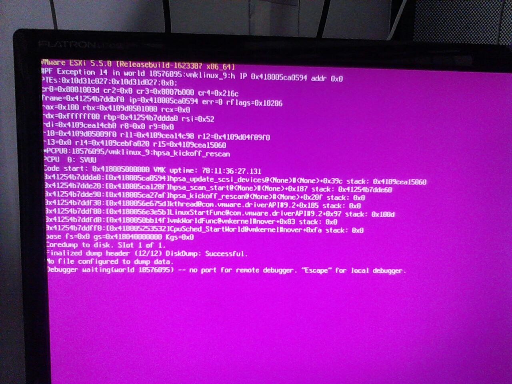
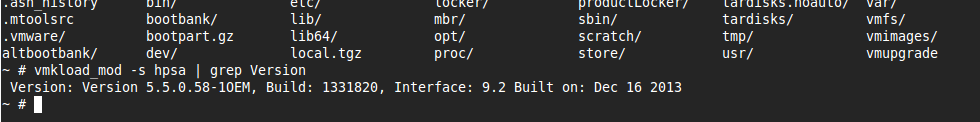

Diagnosa kernel Panic PSOD VMware 5.5 HP StoreEasy 1430 Storage
A kernel panic is an action taken by an operating system upon detecting an internal fatal error from which it cannot safely recover. The term is largely specific to Unix and Unix-like systems; for Microsoft Windows operating systems the equivalent term is "stop error" (or, colloquially, "Blue Screen of Death"). http://en.wikipedia.org/wiki/Kernel_panic
Pada kasus ini di server mail.abc.co.id yang menggunakan VMWare 5.5 terjadi Kernel Panic dengan message error Purple screen:

Pertama kali untuk mendiagnosa kernel panic tersebut adalah mencari log dari kernel dump. biasanya akan disimpan di /var/core/ atau directory /root/ di vmware .
/vmfs/volumes/534668d4-ae54823c-e0c1-a45d36c590b8/core # pwd
/var/core
/vmfs/volumes/534668d4-ae54823c-e0c1-a45d36c590b8/core # ls
vmkernel-zdump.1
/vmfs/volumes/534668d4-ae54823c-e0c1-a45d36c590b8/core # vmkdump_extract -l vmkernel-zdump.1
/vmfs/volumes/534668d4-ae54823c-e0c1-a45d36c590b8/core # ls
vmkernel-log.1 vmkernel-zdump.1
untuk mengekstak kernel dump ( vmkernel-zdump.1 ) cukup dengan perintah vmkdump_extract -l vmkernel-zdump.1 seperti contoh diatas. setelah dilakukan diagnosa pada kernel file dump didapatkan log:
2015-04-09T11:43:56.858Z cpu0:18576095)@BlueScreen: #PF Exception 14 in world 18576095:vmklinux_9:h IP 0x418005ca0594 addr 0x0
PTEs:0x10d31c027;0x10d31d027;0x0;
2015-04-09T11:43:56.858Z cpu0:18576095)Code start: 0x418005000000 VMK uptime: 78:11:36:27.131
2015-04-09T11:43:56.859Z cpu0:18576095)0x41254b7ddda0:[0x418005ca0594]hpsa_update_scsi_devices@<None>#<None>+0x39c stack: 0x4109cea15060
2015-04-09T11:43:56.859Z cpu0:18576095)0x41254b7dde20:[0x418005ca128f]hpsa_scan_start@<None>#<None>+0x187 stack: 0x41254b7dde60
2015-04-09T11:43:56.859Z cpu0:18576095)0x41254b7dde90:[0x418005ca27af]hpsa_kickoff_rescan@<None>#<None>+0x20f stack: 0x0
2015-04-09T11:43:56.860Z cpu0:18576095)0x41254b7ddf30:[0x4180056e675d]kthread@com.vmware.driverAPI#9.2+0x185 stack: 0x0
2015-04-09T11:43:56.860Z cpu0:18576095)0x41254b7ddf80:[0x4180056e3e5b]LinuxStartFunc@com.vmware.driverAPI#9.2+0x97 stack: 0x100d
2015-04-09T11:43:56.860Z cpu0:18576095)0x41254b7ddfd0:[0x4180050bb14f]vmkWorldFunc@vmkernel#nover+0x83 stack: 0x0
2015-04-09T11:43:56.861Z cpu0:18576095)0x41254b7ddff0:[0x418005253532]CpuSched_StartWorld@vmkernel#nover+0xfa stack: 0x0
setelah itu kita bisa teliti dan analisa dengan research di search engine mengenai tersebut, jika tidak ditemukan mengenai informasi log tersebut maka bisa submit report ke VMware dengan menyertakan log dari hasil perintah vm-support . Jika ditemukan maka kita bisa mendapatkan hasil analisa tersebut di:
- http://kb.vmware.com/selfservice/microsites/search.do?language=en_US&cmd=displayKC&externalId=2073753
- https://communities.vmware.com/thread/472795
- http://h20564.www2.hp.com/hpsc/doc/public/display?docId=c04302261
dari referensi diatas bisa kita simpulkan sementara bahwa ditemukan BUG driver scsi storage raid controller pada tipe P222 HP Smart Array Controller di vmware 5.5 (lihat referensi no 3). Untuk keperluan investigasi lebih lanjut kita periksa versi vmware, kernel, tipe server, tipe RAID Card, Product server, dll
versi vmware:
~ # uname -a
VMkernel zimbra 5.5.0 #1 SMP Release build-1623387 Feb 21 2014 17:19:17 x86_64 GNU/Linux
~ # vmware -v
VMware ESXi 5.5.0 build-1623387
~ #
Tipe Server:
~ # smbiosDump | less
System Info: #256
Manufacturer: "HP"
Product: "StoreEasy 1430 Storage"
Serial: "SGH352ACMJ"
UUID: 4a4d4341323533484753413039443742
Wake-up: 0x06 (Power Switch)
versi driver/firmware RAID Card yang digunakan di server sekarang:
~ # esxcli software vib get -n scsi-hpsa
Hewlett-Packard_bootbank_scsi-hpsa_5.5.0.58-1OEM.550.0.0.1331820
Name: scsi-hpsa
Version: 5.5.0.58-1OEM.550.0.0.1331820
atau bisa dengan perintah:
~ # esxcli software vib list | grep -i scsi-hpsa
scsi-hpsa 5.5.0.58-1OEM.550.0.0.1331820 Hewlett-Packard VMwareCertified 2014-04-10
~ #
tipe/model RAID Card:
~ # lspci -vvv | grep "Smart Array"
0000:08:00.0 RAID bus controller Mass storage controller: Hewlett-Packard Company Smart Array P222 [vmhba2]
untuk mencari RAID Card bisa dengan mencari product ID lalu mencarinya dalam katalog melalui search engine (google)
Product ID:
~ # smbiosDump | egrep '(Product ID)'
Product ID: B7D90A
~ #
Solusi atau kesimpulan atau Action:
update driver RAID Controller, Go to
- http://www8.hp.com/us/en/drivers.html
- Enter the HP Smart Array Controller model (for example, "Smart Array P222" and click Search )
- click HP Smart Array P222 Controller
- Select the appropriate operating system. (vmware 5.5)
- Select Driver - Storage Controller .
- klik "* RECOMMENDED * HP ProLiant Smart Array Controller Driver for VMware vSphere 5.5 (VIB file) (American, International)" atau link http://h20564.www2.hp.com/hpsc/swd/public/detail?sp4ts.oid=5194889&swItemId=MTX_cc957c5c29c84bdb840d5ee52b&swEnvOid=4166#tab1.
- klik download
info file yang diunduh:
Type: Driver - Storage Controller
Version: 5.5.0.84-1(30 Mar 2015)
Operating System(s):
VMware vSphere 5.5
File name: scsi-hpsa-5.5.0.84-1OEM.550.0.0.1331820.x86_64.vib (64 KB)
checksum: d55390a95fa83e5f0ab16eb817df8e07 scsi-hpsa-5.5.0.84-1OEM.550.0.0.1331820.x86_64.vib
Cara Update:
> esxcli software vib install -v file:<vib’s location in /tmp> --force --no-sig-check --maintenance-mode
Before:

After:
Ref: